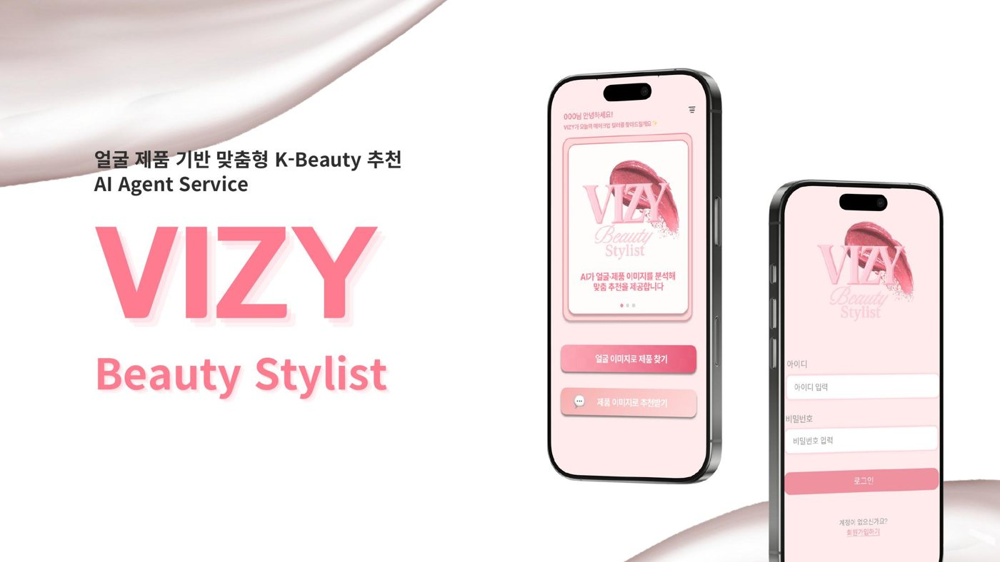

오지윤
서울대학교 경영대학원
경영정보시스템(MIS) 석사과정
AI 기술과 비즈니스의 접점에서, 기술이 실질적인 가치를 만드는 방법을 탐구합니다.
About
저는 기술을 구현하는 것에서 나아가, 그 기술이 사용자에게 어떤 가치를 제공할 수 있는지 고민합니다.
학부에서 AI융합을 전공하며 자연어처리, 컴퓨터 비전, 생성형 AI를 활용한 다양한 프로젝트를 수행했습니다. 여행 결제 가이드, 맛집 리뷰 분석 플랫폼, 약품 관리 앱 등을 개발하며 AI 모델 구현뿐 아니라 서비스 기획과 사용자 중심의 기능 설계까지 경험했습니다.
이러한 경험을 통해 기술의 성능만큼 중요한 것은 사용자의 실제 문제를 해결하는 것임을 배웠습니다. 현재는 서울대학교 경영대학원에서 경영정보시스템(MIS)을 공부하며, AI 기술이 기업과 조직에서 효과적으로 활용되기 위한 조건을 연구하고 있습니다.
Education
서울대학교
경영학 석사(경영정보시스템) · IDSLab · GPA 4.10 / 4.3
성신여자대학교
AI융합학부 학사 · GPA 4.09 / 4.5
Experience
항목을 누르면 세부 내용을 볼 수 있습니다.
하계 연구 인턴
성균관대학교 자연어처리 연구실
2025.07 – 2025.08
하계 연구 인턴
성균관대학교 자연어처리 연구실
- 연구실의 다국어 QA 연구를 위한 한–영 QA 데이터셋 검증: 지문별 영어 번역을 확인해 오역·누락·문장 끊김을 수정하고, 지문과 질문의 관련성을 라벨링
- KoWiki와 라디오 대화 데이터로 LDA·BERTopic 파이프라인 구현. 대화를 5턴 단위로 묶어 맥락이 반영된 토픽을 추출하고, coherence 기준으로 토픽 수를 정한 뒤 coherence·diversity·silhouette 지표로 비교했으며, CTM(Contextualized Topic Models)도 탐구
- 주간 세미나에서 RAG·생성 기법(Generative Retrieval, Chain-of-Thought)과 NLP를 위한 강화학습 기법(PPO, DPO, GRPO, RLHF) 학습
- QA 데이터를 직접 검증하며 번역·라벨 오류가 데이터셋에 얼마나 쉽게 섞이는지 체감했고, 신뢰할 수 있는 AI 시스템을 위한 데이터 품질로 관심을 넓힘
- 지도교수: 고영중 교수
AI 인턴
쌍용리프트 · 소형 건설기계 및 운반장비 판매 기업
2024.06 – 2024.12
AI 인턴
쌍용리프트 · 소형 건설기계 및 운반장비 판매 기업
- 사내 CS 지원 챗봇 개발: 직원들의 제품 및 고장 관련 문의 대응을 지원하기 위해 내부용 챗봇 프로토타입 개발. 제품별 PDF 매뉴얼과 네이버 톡톡의 실제 고객 문의를 유형별로 정리하고, JSONL 학습 데이터를 구축하여 GPT-4o-mini 파인튜닝 및 Flask 기반 챗봇 구현
- 챗봇 테스트 및 데이터 품질 문제 발견: 실제 고객 문의 기반 테스트에서 환각(Hallucination)과 응답 불일치 문제 확인. 유사한 제품명과 여러 형식으로 분산된 매뉴얼 및 문의 기록 등 데이터 준비의 한계를 발견했으며, 충분한 응답 신뢰성을 확보하지 못해 실제 배포는 진행하지 않음
- 생성형 AI 기반 마케팅 업무 효율화: 마케팅팀을 위한 AI 활용 블로그 작성 가이드라인 제작(네이버 키워드 분석, 검색 노출을 고려한 글 구성, ChatGPT·뤼튼 단계별 프롬프트, 최종 사람 검수)으로 게시물당 작성 시간을 평균 약 2시간에서 1시간으로 약 50% 단축하는 데 기여
- 실무 경험을 통한 연구 관심 확장: 중소기업의 AI 도입에서 모델 성능뿐 아니라 데이터 품질과 활용 준비도의 중요성을 체감. 이를 계기로 대학원에서 기업 AI 시스템의 데이터 품질 문제에 관심을 갖게 됨
학부 연구생
성신여자대학교 AIDEN Lab
2024.06 – 2025.12
학부 연구생
성신여자대학교 AIDEN Lab
- 첫 연구 질문을 논문까지 완성: 인스타그램 이미지와 한국어 해시태그가 의미적으로 일치하는지 예측하는 연구로, UROP에서 시작해 오장민 교수님과 1저자 논문으로 발전시켰고 현재 수정 중
- 데이터셋을 대규모로 재구축: 32개 도메인, 1,673개 게시물에서 이미지–해시태그 12,011쌍을 모으고, 작성한 라벨링 가이드라인에 따라 GPT-4o-mini로 1–5점 정합성 점수를 부여한 뒤 라벨의 자기 일관성을 검증
- 초기 결과가 같은 게시물의 이미지가 학습·평가 데이터에 함께 들어가 부풀려졌음을 발견하고, 게시물 단위 분할(StratifiedGroupKFold)로 바로잡음
- CLIP·KoCLIP을 세 가지 학습 전략으로 비교하고 SVM·XGBoost를 기준 모델로 두었으며, 클래스 불균형을 고려해 macro-F1과 클래스별 재현율로 평가
- 심사 과정 대응: 리뷰어 요청에 따른 추가 실험, 원고 수정, 답변서 작성
- 연구실 논문 세미나 발표 및 진행(DiT, ICCV 2023 등). Hugging Face Diffusion Course와 diffusers로 Diffusion 모델을 학습하고, 텍스트-비디오 모델(Lumiere, Stable Video Diffusion)을 비교
- 지도교수: 오장민 교수
개인 연구 (UROP)
성신여자대학교
2024.09 – 2025.01
개인 연구 (UROP)
성신여자대학교
- 브랜드와 무관한 게시물에 #올영세일 같은 해시태그가 붙는 현상에서 출발해, 이미지와 한국어 해시태그가 실제로 일치하는지 판단하는 모델 연구
- 인스타그램 게시물과 해시태그를 직접 수집하고, CLIP·KoCLIP으로 유사도 기반 분류, 임베딩 고정 후 분류기 학습, 전체 파인튜닝 세 가지 전략을 비교
- 영어 CLIP이 한국어 해시태그를 제대로 이해하지 못해 KoCLIP으로 전환했고, 일치 게시물이 압도적으로 많은 불균형 문제에는 교차 검증으로 모든 분할에 소수 클래스가 포함되도록 대응
- 학습 전략보다 소규모 크롤링 데이터와 해시태그 라벨의 노이즈가 성능을 더 크게 제한한다는 점을 확인
- 이 연구가 이후 1저자 논문의 출발점이 됨(위 학부연구생 항목 참고)
Projects

최신 · 생성형 AI 수업
VIZY — K-뷰티 AI 에이전트
얼굴·제품 사진 속 메이크업 색을 실제 제품과 매칭하고, RAG 기반 에이전트로 개인화된 추천과 그 이유를 설명합니다.
GPT-4o-mini · RAG · pgvector · React
자세히 보기 →
코드잇 파워부스트 데모데이 2위
Momentum
큰 목표를 매일의 ‘모먼트’로 쪼개 주고, GPT로 세부 목표를 추천하는 목표 관리 앱
자세히 보기 →
AI융합학부 IT 경진대회 2위
MediMate
약 포장지를 OCR로 읽어 유효기간을 관리해 주는 모바일 앱
자세히 보기 →
캡스톤 디자인 · 팀장(PM)
Ezpage
해외 화폐를 AI로 인식하고, 보유한 지폐와 동전을 바탕으로 최적의 결제 조합과 예상 거스름돈을 안내하는 여행 결제 앱
자세히 보기 →
Google Solution Challenge 2024
To Be Mom
주차별 체크리스트와 Gemini 기반 챗봇을 갖춘 임산부 건강관리 앱
자세히 보기 →
NLP · 리뷰 분석
Camchelin
대학가 음식점의 긍정·부정 리뷰를 한눈에 비교하고, 실제 이용자들의 다양한 평가를 바탕으로 더 균형 있는 맛집 선택을 돕는 AI 리뷰 플랫폼
자세히 보기 →NLP 경진대회 · Dacon
난독화된 한글 리뷰 복원
자모 단위로 난독화된 리뷰를 한국어 PLM과 2단계 디코딩으로 복원
자세히 보기 →그 외: Diffusion Model 스터디 · 수업 프로젝트: 추천 시스템, 빅데이터 분석, 자료구조
Honors
- 2026.02성신장학금(학업성적우수) — 4학년 2학기
- 2025.02제1회 코드잇 파워부스트 데모데이 2위
- 2025.02대학혁신지원사업 활동장학금(UROP)
- 2025.02성신장학금(학업성적우수) — 3학년 2학기
- 2024.08AI융합학부 IT 경진대회 고학년부 2위
- 2024.08성신장학금(학업성적우수) — 3학년 1학기
Skills
- AI / ML
- PyTorch, Hugging Face Transformers, YOLOv8, OpenAI & Gemini API
- 프로그래밍
- Python, JavaScript, TypeScript, Kotlin, HTML/CSS
- 프레임워크
- React, React Native
- 도구
- Git, Google Colab, VS Code, Figma
- 어학
- 한국어(모국어), 영어(TOEIC 900, TEPS 342)
Contact
The best way to reach me is by email: jynoh825@gmail.com